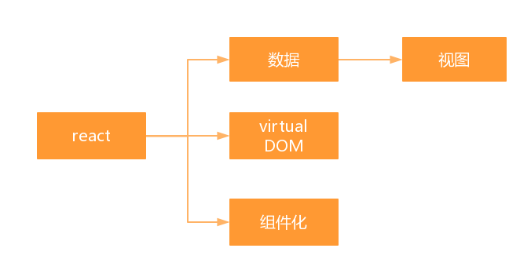

react-native构建原生应用
目录
什么是react-native
实例演示
构建应用的技术栈
文件结构
redux数据流
react的组件化思维
react-native
搭建开发环境
http://facebook.github.io/react-native/docs
实例演示
构建应用的技术栈

react
看例子
redux
看例子
redux-saga
文件结构
如图
redux数据流

react的组件化思维之一
HOC
需求
1. 实时验证
2. 自定义错误的显示
3. 自定义配置表单验证
redux-form
reduxForm
field
react-native的利弊
1. 布局的兼容性，特别是android端机型不同、分辨率不同
2. 对原生的API支持还有限
3. 动画是略卡顿的，有些机型表现不一样，需要深入的优化。
4. 还是需要掌握一些原生的东西
1. 有JS的功底就可以写APP，而且可以兼容IOS、Android,很是酷炫。
2. 具有React的优势，数据驱动，高度组件化，很好的管理应用数据，性能好。
3. 生态圈够大，维护者很多